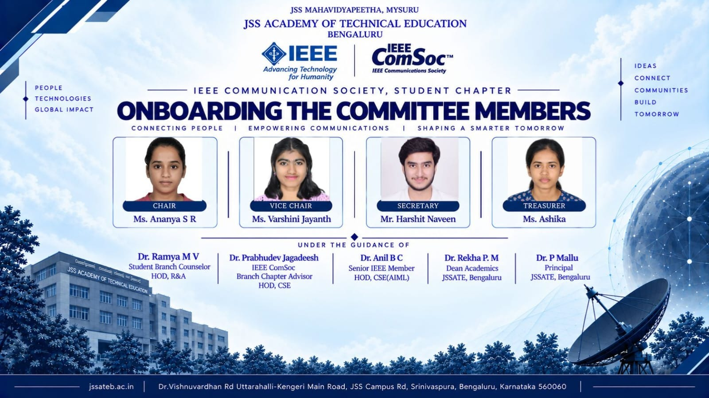

01
Explore
Discover communication systems, networking, signal processing and the ideas shaping tomorrow.
↗A community of curious minds exploring the networks, signals and technologies that bring people closer together.
The IEEE Communications Society Student Chapter at JSSATEB is a space to learn, experiment and grow around the technologies shaping how the world communicates.
From wireless networks and next-generation connectivity to signal processing and emerging communication systems, we aim to turn classroom concepts into real-world understanding through collaboration and hands-on learning.
Get to know us ↗Technology moves forward when people learn together. We create opportunities to explore ideas and put them into practice.
Discover communication systems, networking, signal processing and the ideas shaping tomorrow.
↗Learn through technical sessions, workshops, demonstrations and hands-on challenges.
↗Meet fellow learners, exchange perspectives and build a community around technology.
↗Workshops, expert talks, collaborative builds and student-led initiatives — this is where curiosity becomes momentum.
Bring an idea to life ↗Build practical knowledge beyond the lecture hall.
Explore emerging trends with new perspectives.
Turn questions into experiments and ideas into prototypes.
Guided by faculty. Driven by students. Connected by a shared interest in communication technology.
Committee names are taken from the onboarding poster. Add official portraits and verify current roles before publishing.
Our committee onboarding — the people helping shape the next chapter of IEEE ComSoc at JSSATEB.

Interested in communications technology, want to collaborate, or have an idea for an activity? Start a conversation with the chapter.
JSS Academy of Technical Education
Dr. Vishnuvardhan Road, Bengaluru, Karnataka
Add your official chapter email and social links here before launch.